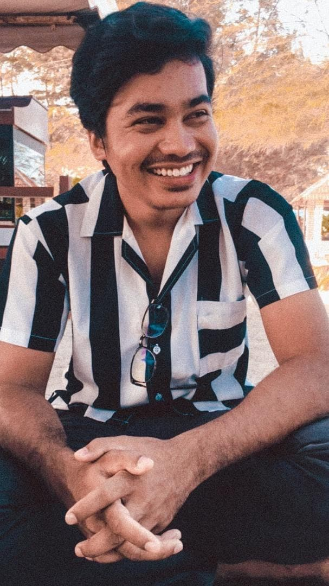

About me
My name is Muhammad Yassin Izham Bin Md Jahangir Alam and I am Bachelor student of Office Management System at University Technology Mara Campus Machang. I was born in Kuala Lumpur in Hospital Damai Services.I'm the eldest of two in my family. I spent most of my childhood in Kepong, Kuala Lumpur. My father is a poultry like poultry chicken in Kelantan. My mother was a housewife.
Anyways let’s start from the beginning, I started my educational career in 2004 at Tanah Merah primary school was it fun it had everything a kid could ever imagine. It was unbelievable we were given milk and cookies and we got to sing as well as the fundamental steps of life, the alphabet and numbers. My very first secondary school in 2010 was Sekolah Menengah Kebangsaan Dato'Ahmad Maher.I believe I adopted both my parents’ brilliant brains, because I was always the best students academically. However, my abilities were not limited to the classroom alone. I also excelled in sports. In high school, I was arguably the best male sportsperson in outdoor games, especially in athletics and football.My favourite player football is Eden Hazard and you can see biodata of Eden Hazard too at.Go to Google
BIODATA